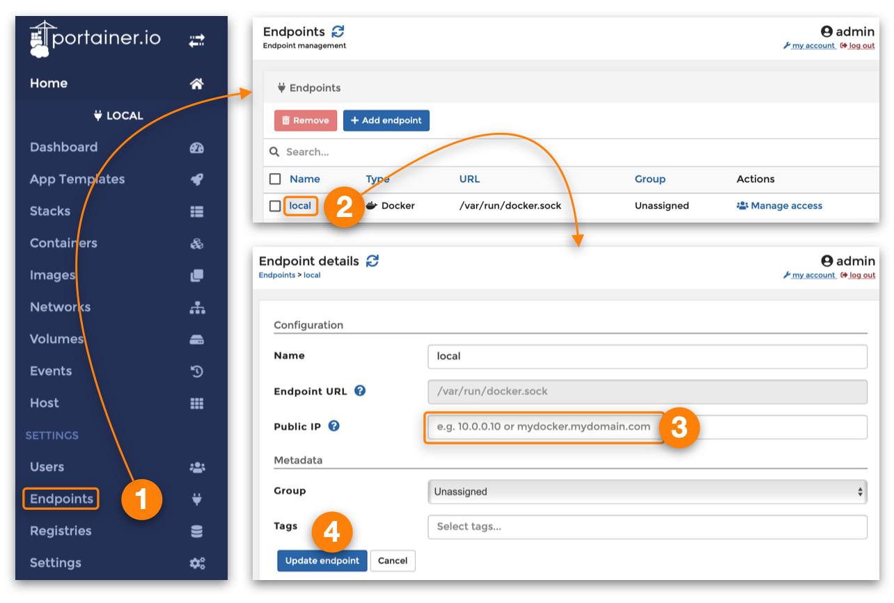

Portainer CE
References
Definition
-
"#yourip" means any of the following:
- the IP address of your Raspberry Pi (eg
192.168.1.10) - the multicast domain name of your Raspberry Pi (eg
iot-hub.local) - the domain name of your Raspberry Pi (eg
iot-hub.mydomain.com)
- the IP address of your Raspberry Pi (eg
About Portainer CE
Portainer CE (Community Edition) is an application for managing Docker. It is a successor to Portainer. According to the Portainer CE documentation
Portainer 1.24.x will continue as a separate code branch, released as portainer/portainer:latest, and will receive ongoing security updates until at least 1st Sept 2021. No new features will be added beyond what was available in 1.24.1.
From that it should be clear that Portainer is deprecated and that Portainer CE is the way forward.
Portainer CE coexistence with Portainer
IOTstack has been set up so that Portainer CE and Portainer can coexist. This is intended as a short-term migration aid rather than a long-term proposition.
If you are a first-time user of IOTstack, you should choose Portainer CE and forget about Portainer.
Installing Portainer CE
Run the menu:
$ cd ~/IOTstack
$ ./menu.sh
Choose "Build Stack", select "Portainer-ce", press [TAB] then "\<Ok>" and follow through to the end of the menu process, typically choosing "Do not overwrite" for any existing services. When the menu finishes:
$ docker-compose up -d
Ignore any message like this:
WARNING: Found orphan containers (portainer) for this project …
Migration note
Portainer CE and Portainer use different locations for their persistent data:
| Edition | Persistent Data Directory | Reference |
|---|---|---|
| Portainer | ~/IOTstack/volumes/portainer | [A] |
| Portainer CE | ~/IOTstack/volumes/portainer-ce | [B] |
If you have been running Portainer but have never run Portainer CE then:
- [A] will exist, but
- [B] will not exist.
Whenever "Portainer-ce" is enabled in menu.sh, a check is made for the presence of [A] combined with the absence [B]. If and only if that situation exists, [B] is initialised as a copy of [A].
This one-time copy is intended to preserve your Portainer settings and admin user password for use in Portainer CE. Thereafter, any settings you change in Portainer CE will not be reflected in Portainer, nor vice versa.
Port Number = 9002
Both Portainer CE and Portainer are usually configured to listen to port 9000 but, in the IOTstack implementation:
- Portainer CE uses port 9002; and
- Portainer uses port 9000.
You can always change the port numbers in your
docker-compose.yml.
First run of Portainer CE
In your web browser navigate to #yourip:9002/.
-
If you are migrating from Portainer:
- review the Migration note which explains why your Portainer credentials will likely apply to Portainer CE, and then
- supply your Portainer credentials.
-
If you are not migrating from Portainer:
- the first screen will suggest a username of "admin" and ask for a password. Supply those credentials and click "Create User".
- the second screen will ask you to select a connection method. For IOTstack, "Docker (Manage the local Docker environment)" is usually appropriate so click that and then click "Connect".
From there, you can click on the "Local" group and take a look around. One of the things Portainer CE can help you do is find unused containers but beware of reading too much into this because, sometimes, an "unused" container is actually the base for another container (eg Node-Red).
There are 'Quick actions' to view logs and other stats. This can all be done from terminal commands but Portainer CE makes it easier.
Ceasing use of Portainer
As soon as you are happy that Portainer CE meets your needs, you can dispense with Portainer. IOTstack only has limited support for getting rid of unwanted services so you should do the following.
-
Stop Portainer from running and remove its image:
$ cd ~/IOTstack $ docker-compose stop portainer $ docker-compose rm -f portainer $ docker rmi portainer/portainer -
Either:
- run
menu.sh - choose "Build Stack"
- de-select "portainer", and
- follow through to the end choosing "Do not overwrite" for existing services,
or:
-
edit
docker-compose.ymland remove these lines:portainer: container_name: portainer image: portainer/portainer restart: unless-stopped ports: - "9000:9000" volumes: - /var/run/docker.sock:/var/run/docker.sock - ./volumes/portainer/data:/data -
edit
services/selection.txtand remove this line:portainer
- run
-
Tidy-up:
$ cd ~/IOTstack $ rm -rf ./services/portainer $ sudo rm -rf ./volumes/portainer
Setting the Public IP address for your end-point
If you click on a "Published Port" in the "Containers" list, your browser may return an error saying something like "can't connect to server" associated with an IP address of "0.0.0.0".
To fix that problem, proceed as shown below:

- Click "Endpoints" in the left hand panel.
- Click the name "local" in the list of Endpoints.
- Click in the "Public IP" field. Enter one of the following:
- The multicast DNS (MDNS) name of your Raspberry Pi (eg
iot-hub.local) - The fully-qualified domain name (FQDN) of your Raspberry Pi (eg
iot-hub.mydomain.com) - The IP address of your Raspberry Pi (eg
192.168.1.10)
- The multicast DNS (MDNS) name of your Raspberry Pi (eg
- Click "Update endpoint".
To remove the Public IP address, repeat the above steps but clear the "Public IP" field in step 3.
The reason why you have to tell Portainer CE which Public IP address to use is because an instance of Portainer CE does not necessarily have to be running on the same Raspberry Pi as the Docker containers it is managing.
Keep in mind that clicking on a "Published Port" does not guarantee that your browser can open a connection. For example:
- Port 1883 for Mosquitto expects MQTT packets. It will not respond to HTTP, so any attempt will fail.
- Port 8089 for PiHole will respond to HTTP but PiHole may reject or mis-handle your attempt.
- Port 1880 for NodeRed will respond normally.
All things considered, you will get more consistent behaviour if you simply bookmark the URLs you want to use for your IOTstack services.
If you forget your password
If you forget the password you created for Portainer CE, you can recover by doing the following:
$ cd ~/IOTstack
$ docker-compose stop portainer-ce
$ sudo rm -r ./volumes/portainer-ce
$ docker-compose start portainer-ce
Then use your browser to navigate to #yourip:9002/ and follow the steps in if you are not migrating from Portainer.